תינוקות מגלים את האלפים הצרפתים

21/07/2019 עודכן: 19/08/2019
1,410
12
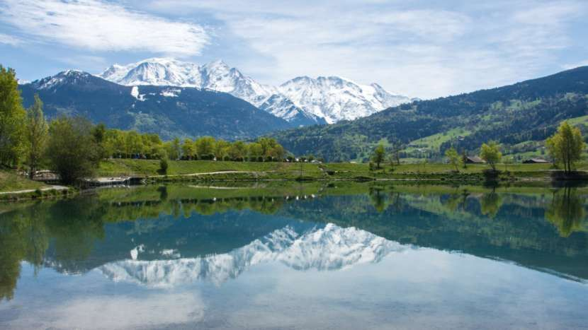
מזה זמן רב רצינו אני ובת דודתי לעשות טיול משותף, שאיך שהוא מעולם לא יצא לפועל עד עתה שנולדו הצוציקים. כחובבי טבע מושבעים והורים לתאומים בני 1.4 היינו צריכים למצוא יעד המשלב טבע עם טיסה יחסית קצרה ורצוי ישירה. המון יעדים הועלו כאופציות ונפסלו מסיבות רבות ומגוונות, עד שנתקלנו בכמה בלוגים על האלפים הצרפתיים. חיפוש זריז של טיסות גילה לנו שיש טיסה ישירה לליון ואפילו בשעות מאוד נוחות! זהו, הפור נפל ונמצא לנו יעד! הזמנו כרטיסים לחודש מאי (שבוע לאחר פסח) פשוט כי היה זול פי 2 מאשר בחול המועד, וכרגיל שקעתי בקריאת חומרים ותכנון הטיול.
זה הטיול הראשון שלנו עם עוד זוג ותינוק, סה”כ 4 מבוגרים ו-3 תינוקות (תאומים בני 1.4 וקטני בן 9 חודשים) לכן התכנון היה מעט יותר מאתגר, פתאום צריך לחשוב על עוד זוג, האם גם הם יזרמו עם התכנון, ככה יצא שהאהבה לטיולים עוברת במשפחה ולאורך כל הטיול היינו ממש באותו הראש, עד כדי שגם הצוציקים הסתנכרנו לגמרי על הלו”ז.
אז הנה סיכום הטיול שלנו באלפים הצרפתיים- מותאם תינוקות.
בתמונה- שלושת המוסקטרים בביקור הראשון בצרפת.
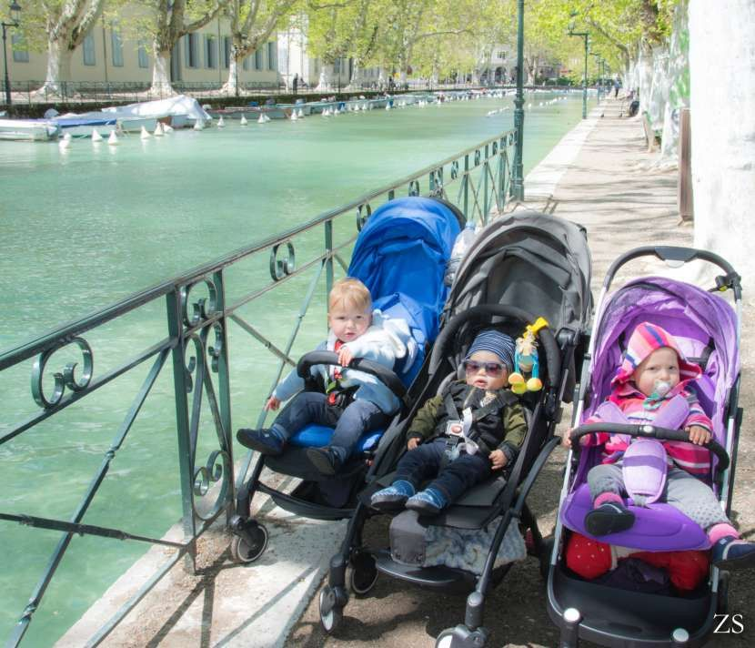
יום 1- 2 למאי 19:
בשעה 14:00 אנחנו ממריאים מטרמינל 1 בטיסת איזיג'ט לכיוון ליון, טיסה של 4 וקצת שעות שעוברת די בנעימים, הצוציקים ישנים חצי מהטיסה וגם אנחנו מנמנמים. בשעה 18:00 נוחתים, לאחר קבלת מזוודות והרכב (הפעם השכרנו רכב רגיל, מיורופקאר, כי סוף סוף עגלת התאומים נשארה בבית ובמקומה נכנסו 2 טיולונים קטנים-יויו) אנחנו נוסעים למלון שהזמנו בסמוך לשדה התעופה. עם תינוקות ממש לא רצינו לעשות נסיעה ארוכה, זו בדיוק שעת ההשכבה אז העדפנו ללכת כולנו לישון ולהתחיל את הטיול למחרת.
המלון-Mercure Lyon L'Isle d'Abeau שנראה לגמרי מלון עסקים, נקי ומסודר, נמצא 15 דקות מהשדה על הכביש המהיר, המלון מציע חדרים סטנדרטיים וכן דירות קטנות הכוללות גם מטבחון. אנחנו לקחנו דירה, קיבלנו 2 מיטות תינוק (בזמן שהקטנים ישנו היה לנו עוד חדר לנוח ומטבחון להכין להם דייסת בוקר בזריז), הזוג השני לקחו חדר רגיל, וכל משפחה התפזרה לשנת הלילה שלה. שירות החדרים במלון עובד עד מאוחר, מזל כי היינו מורעבים! ככה שבזמן שהשכבתי את הקטנים לישון בעלי כבר ארגן לנו ארוחת ערב בירה ופיצה סופר טעימה.
יום 2- 3 למאי 19:
אחרי לילה רגוע בו כולם נרדמו וישנו מצוין (לפחות באגף שלנו), התחלנו את הבוקר בארוחת הבוקר המפנקת במלון (הילדים כבר אכלו דייסה שהכנו להם במטבחון בחדר, אבל זה לא מנע מהם לטעום מכל הטוב שהיה), שבעים ומרוצים התחלנו בנסיעה לכיוון האלפים. התחנה הראשונה שלנו היא העיירה אנסי. מדובר בנסיעה של כשעה וקצת בכביש האגרה המהיר (העדפנו לנסוע בו כדי לצמצם זמן נסיעות עם הצוציקים), קטע הכביש עלה כ-6 יורו. למזלנו הצוציקים בשני הרכבים החליטו לנצל את הזמן לשנת הבוקר שלהם.
אנסי היא העיר הגדולה ביותר בסבואה עילית. העיר שוכנת בקצהו הצפוני של אגם אנסי והיא נמצאת כ-35 ק"מ דרום-מערבית לז'נבה. העיר מכונה "ונציה של הרי האלפים", בגלל נהר התיו העובר בה ומתפצל לשתי תעלות בעיר. ב-1860 סופח אזור סבויה והעיר הפכה לחלק מצרפת. מאז סוף המאה ה-19 הפכה העיר למרכז תיירותי. קרבתה לאגם והתעלות העוברות בה עזרו בהפיכתה לאתר תיירות פופולרי, בנוסף לסביבה ההררית הפסטורלית והקרבה לאתרי סקי רבים. המדיניות הסביבתית העירונית הצליחה לשמור על 40.3% מהשטחים הירוקים, והעיר קיבלה בשנת 2015 את פרס "פרח הזהב" הניתן לתשע הערים הצרפתיות הפורחות ביותר.
הגענו לאנסי לקראת השעה 11 וחנינו ליד בניין בית המשפט (החניון הגדול יותר שצמוד לטיילת היה מלא), הליכה של 7 דקות הובילה אותנו לאגם ולתחילת הטיילת, שם קיבלו את פנינו ברבורים חמודים שחשבו שהצוציקים יאכילו אותם, אחרי הרבה מבטי התלהבות הדדיים (ברבורים וצוציקים) הברבורים הבינו שאוכל הם לא יקבלו אז שחו לחפש קורבן אחר.
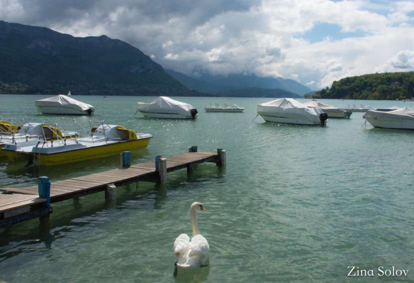
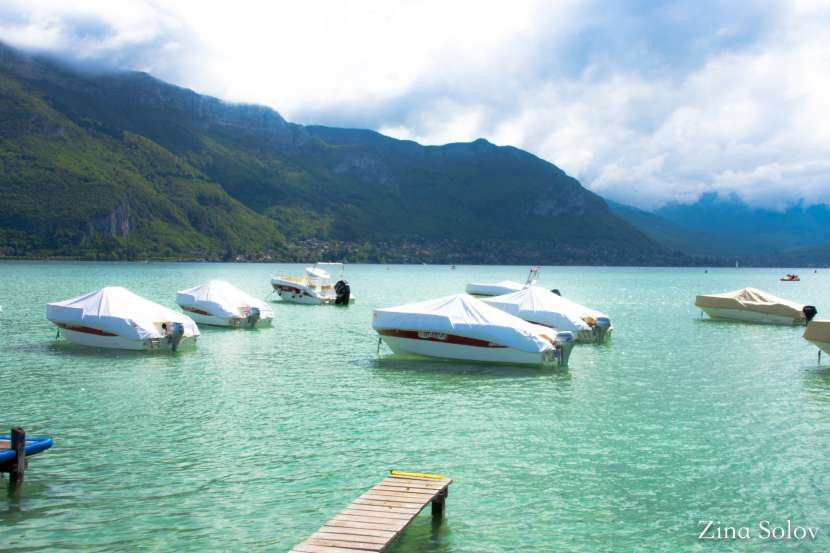
המים צלולים ותכולים, מסתבר שזה האגם הכי נקי וצלול בצרפת (כי מוזן ממי מעיינות), והוא באמת מהמם. ליד האגם אנחנו מוצאים משחקייה, מאוד מושקעת, מגודרת, בה המתקנים מגולפים בעץ בצורות שונות כמו אוניות ענקיות, טירות ומגדלים, והיא משקיפה על האגם המהמם. הצוציקים מעבירים שם כחצי שעה במשחקי מגלשה ונדנדות. אחרכך המשכנו לאורך הטיילת לכיוון העיר העתיקה, לא לפני שהצטלמנו ליד התעלה המפורסמת שזורמת לאגם.
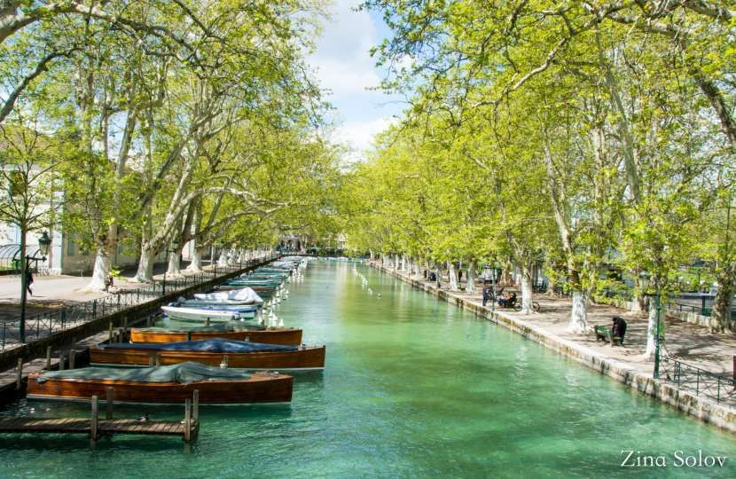
העיר באמת יפיפיה, מזג האוויר שמשי (אך קריר) אבל השילוב של השמיים הכחולים ומי הטורקיז יחד עם ריבוי הפרחים באדניות ליד כל בית ודוכן יוצר אווירה פסטורלית ומדהימה. עברנו ליד בית הכלא המרשים (בערך התמונה הכי מפורסמת של אנסי) ומשם המשכנו לחפש לנו מסעדה לצהריים.
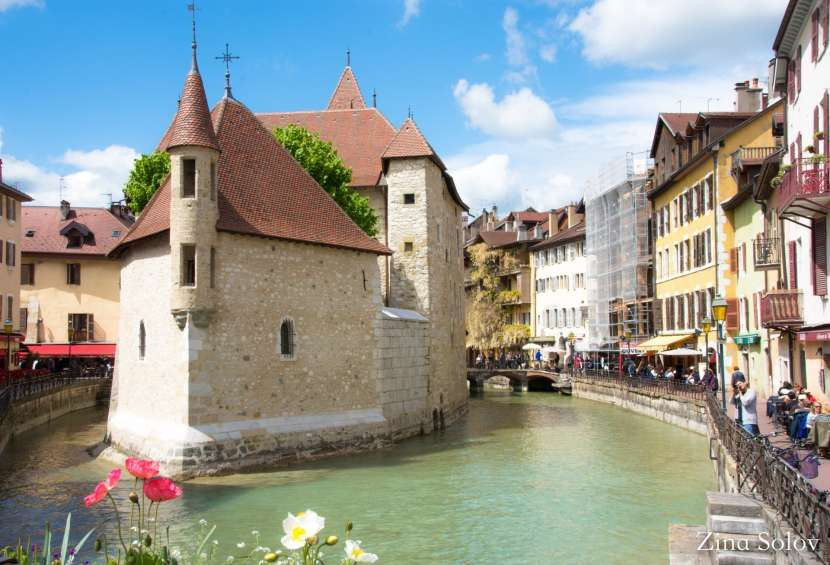
שימו לב, בצרפת ארוחות הצהריים מוגשות בין 12:00 ל-14:00 לאחר מכן פשוט תישארו רעבים (או תאכלו במאפיות או מקדונלדס/KFC וכו'). חיפשנו בין הסמטאות מסעדה נחמדה לשבת בה עם הקטנים, בסוף התפשרנו על מסעדת בשרים שוויצרית (כי הגברים רצו סטייק), לילדים הזמנו מרק ונשנשו איתנו את הבשר. לאחר מנה מאוד משביעה (ולא זולה), התחלנו לנוע חזרה לרכב, הגיע זמן השנ"צ של הקטנים וגם כי מחכה לנו עוד נסיעה של שעה וחצי עד שאמוני שם אנחנו לנים בימים הקרובים (לא הפריע לנו לעצור בחנות מזכרות ולקנח בגלידה מקומית טעימה).
גם הפעם החלטנו לנסוע דרך הכביש המהיר (לצערי עם צוציקים פחות מתאפשר לבזבז זמן על דרך הררית יפה), אבל הנופים עדיין מאוד יפים ומרשימים, פסגות ההרים מכוסי השלג נגלים ומתקרבים ומידי פעם צצים להם מפלים, מיד לאחר העיירה פאסיי הכביש הופך לגשר מטורף שתלוי מעל העיירות ומשם אנחנו נכנסים לעמק מוקף בהרי האלפים המושלגים, פשוט עוצר נשימה! בשעה ארבע וחצי אנחנו מגיעים לדירה שלנו, שנמצאת חצי שעה הליכה ממרכז שאמוני (7 דקות נסיעה).
אנחנו לנים בדירה שהזמנו דרך air bnb- שנקראת- beautiful chalet allores, בית עץ מדהים! 3 חדרי שינה, סלון ענקי עם אח, מטבח מטורף ולמטה קומת מרתף עם מכונת כביסה מייבש וסאונה! בחוץ מיטות שיזוף, דשא רך ונעים וגולת הכותרת היא המון בלאן שנשקף ממש מחלונות הדירה במלוא הדרו (הפסגה הגבוהה ביותר באלפים 4810 מ') מדהים!
בתמונה- צוציקית מתלהבת מהאח:
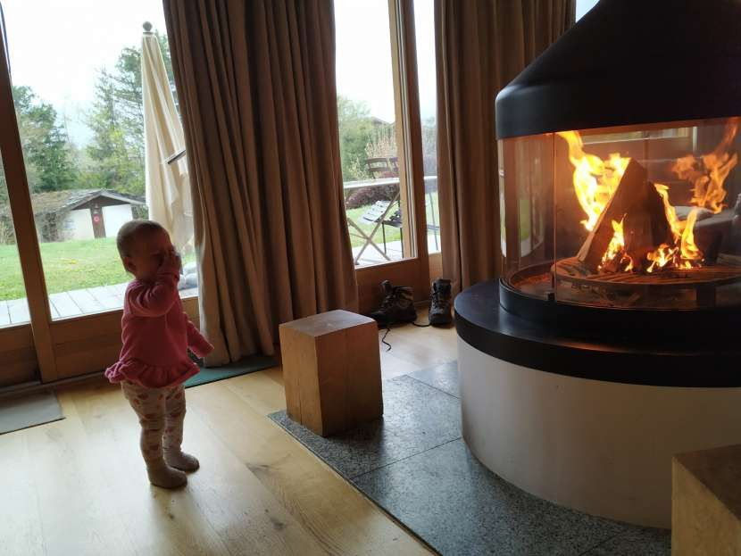
הצוציקים מתעוררים מהנסיעה ובזמן שאני ובת הדודה עושות בייביסיטר הגברים נוסעים לסופר להצטייד במצרכים. בשעה שבע אנחנו משכיבים את הקטנים לישון והמבוגרים נהנים מעל האש משובח ויין כפתיחה לטיול מוצלח.
בתמונה- צוציקים מתרוצצים בדשא של הדירה, המון בלאן וה-ADM
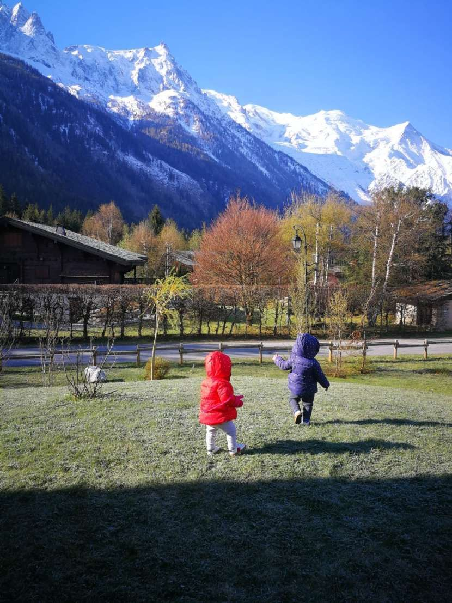
יום 3- 4 למאי 19:
קמנו לבוקר סגרירי, אבל נקי מעננים, המון בלאן נשקף במלוא הדרו מחלונות הדירה המקסימה שלנו, אבל התחזית לא מנבאת טובות ליומיים הקרובים- הלילה צפוי שלג וטמפרטורה של מינוס7 מעלות! אבל מזג האוויר לא מפחיד אותנו!
אחרי ארוחת בוקר תוצרת עצמית, מפנקת במיוחד, אנחנו מתלבשים חם ויוצאים לפארק האיילים- Parc animalier de Merlett.
בתמונה- אייל על רקע האלפים
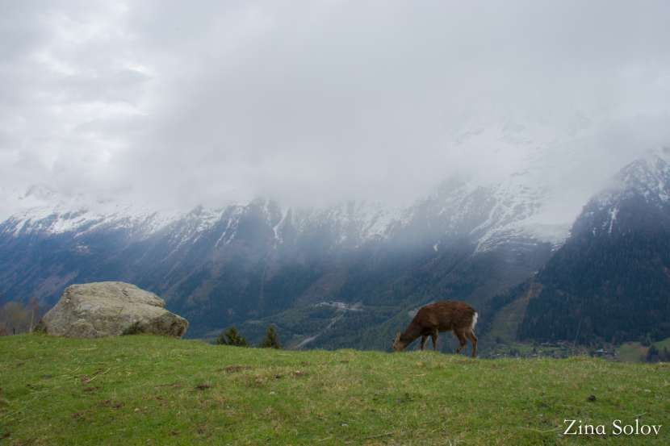
הפארק ממוקם בגובה 1536מ' מעל שאמוני וכולל מגוון בעלי חיים בעיקר איילים שמטיילים חופשי בשמורה. הפארק נמצא כ-20 דקות נסיעה מהדירה, בזמן הזה הצוציקים חורפים בנעימים ואנחנו נהנים מהנופים המושלגים ומקרחון Bossons המרשים שנשקף מחלון הרכב.
כשמגיעים לפארק ישנם 4 חניונים הנמצאים בגבהים שונים, המלצה- לבוא מוקדם ופשוט לנסוע ממש עד הסוף, יש שם חניון המיועד לקשישים, נכים ומשפחות עם תינוקות. היתרון בלהיות מחוץ לעונה שיש שפע חניה… וגם כי הגענו ממש מוקדם. הפארק פתוח החל מ-10 בבוקר ועד 6 בערב, כניסה עולה 8 יורו למבוגר, ילדים עד גיל 4 חינם.
אז חנינו בחניון העליון והכי קרוב לכניסה אולם משם מצפה לנו עליה של כ-300 מטר עם העגלות עד הכניסה עצמה, אין כמו מיני מסע כומתה כדי להנות כמו שצריך מהיעד.
עד שהגענו לפארק מזג האוויר השתנה דרמטית, עננים כיסו את הפסגות, האויר נהיה סגרירי וקפוא (זה השלב שהבנתי שחייב לקנות כפפות לקטנים כי הידיים שלהם פשוט היו קפואות, לא שזה הפריע להם להתרוצץ מאושרים בפארק ולהתלהב מכל אווז, ברווז, כבשה ואייל).
בתמונה-הנוף במהלך עליית ה- 300 מ' מהחניון לכניסה לפארק
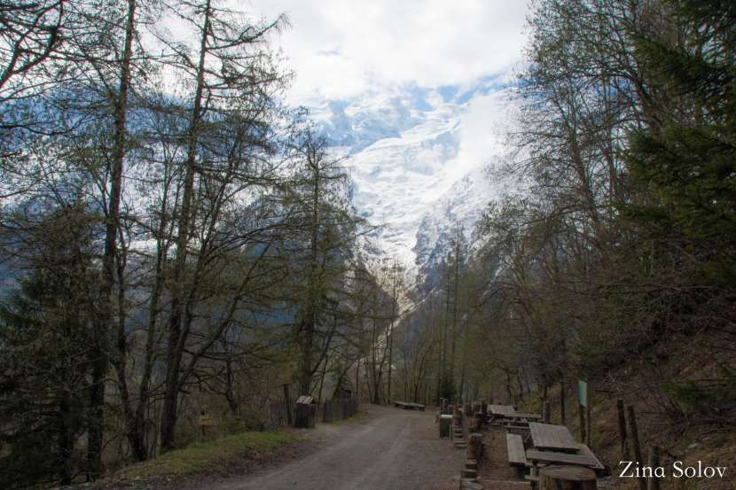
בפארק עצמו יש קפיטריה ממש נחמדה (שם התחלנו את המסלול שלנו עם כוס קפה ונשנושים לילדים) וכן יש מספר מסלולי הליכה בדרגות קושי שונות, כמובן שבחרנו את המסלול הכי פשוט- המעגלי שלוקח כשעה הליכה. את העגלות אגב השארנו ליד הקפיטריה ופשוט נתנו לקטנים להתרוצץ (הצוציק הצעיר ביותר היה מחומם היטב במנשא), וכמה אושר הם חוו! לא הפסיקו לרוץ לכל בעל חיים שראו.
הנה כמה תמונות- צוציקים ואיילים
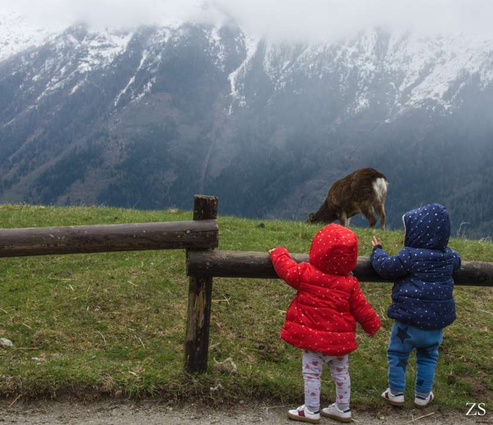
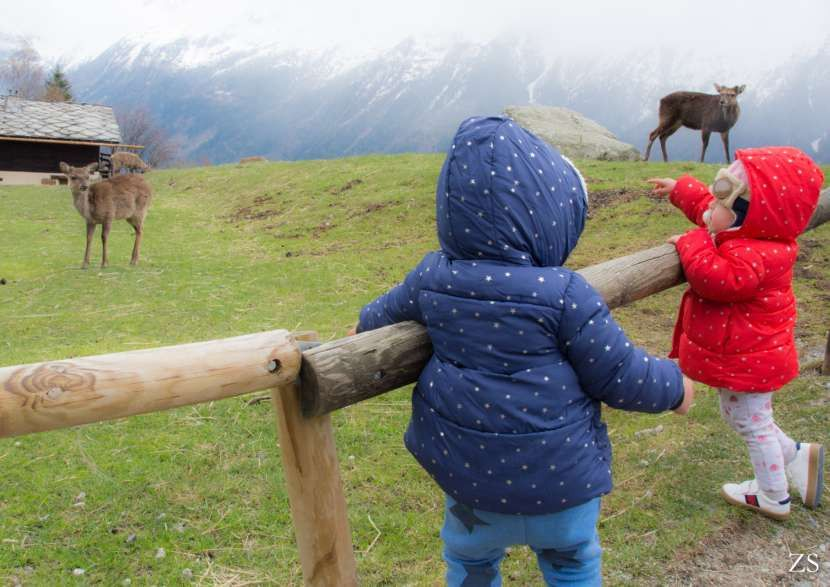
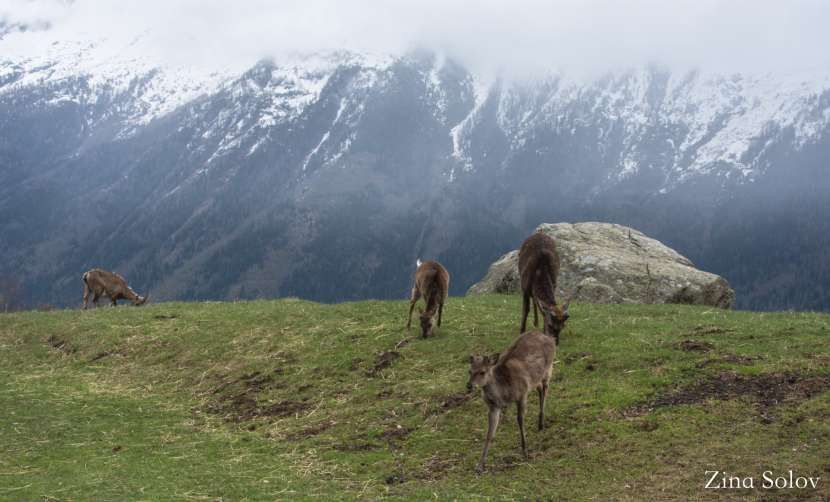
טיילנו כשעתיים בפארק מתפעלים מהנופים והחיות, עד שראינו שאם אנחנו רוצים להספיק לאכול צהריים במסעדה כדאי שנזוז, לא היה פשוט לקחת משם את הצוציקים שכבר מצאו להם תעסוקה בארגז החול הענקי שבפארק, למזלנו הגיעו שני ברווזים ופשוט בנפנוף כנפיים סילקו אותנו משם.
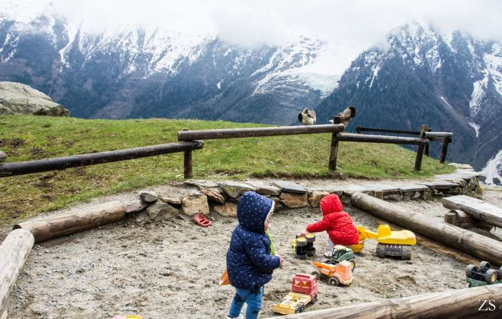
הנה כמה תמונות נוספות של בעלי החיים בפארק:
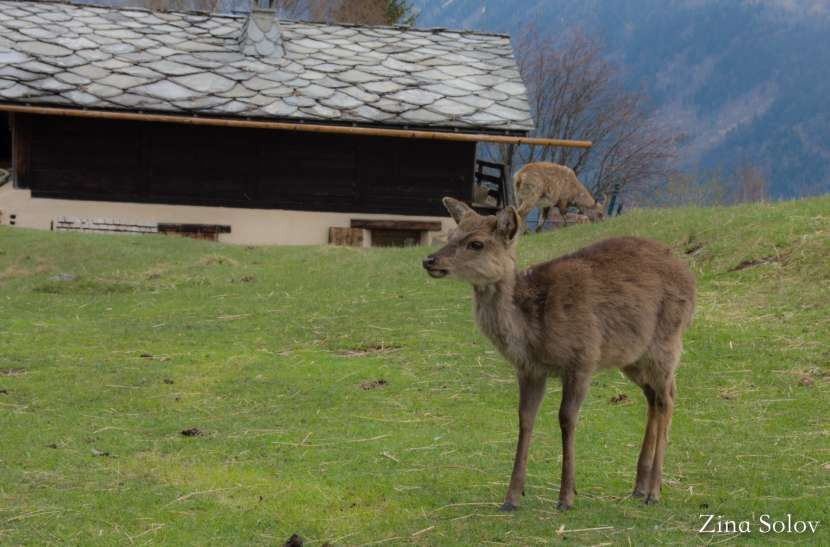
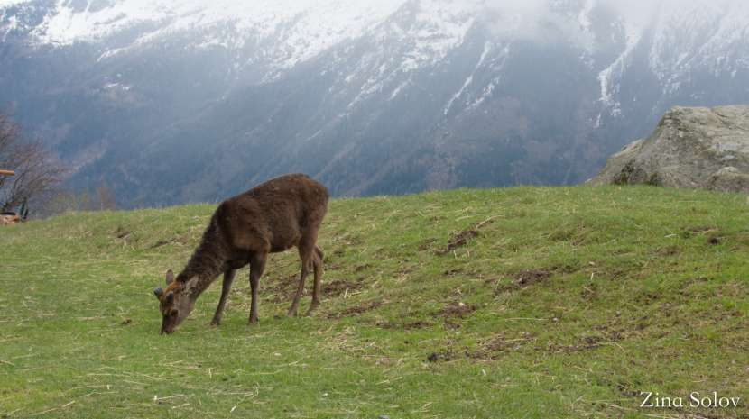
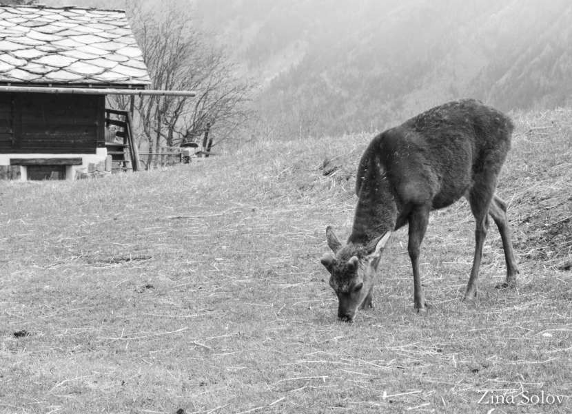
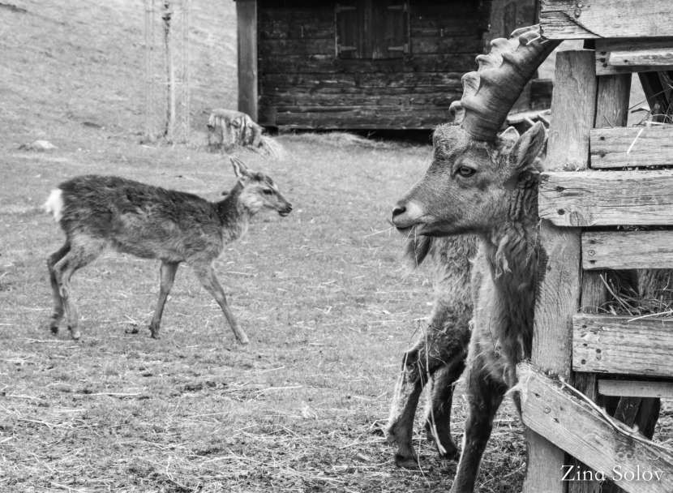
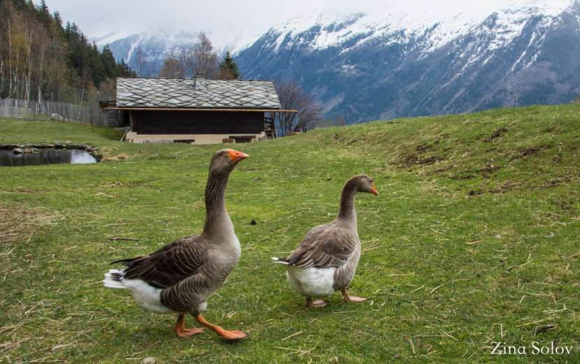
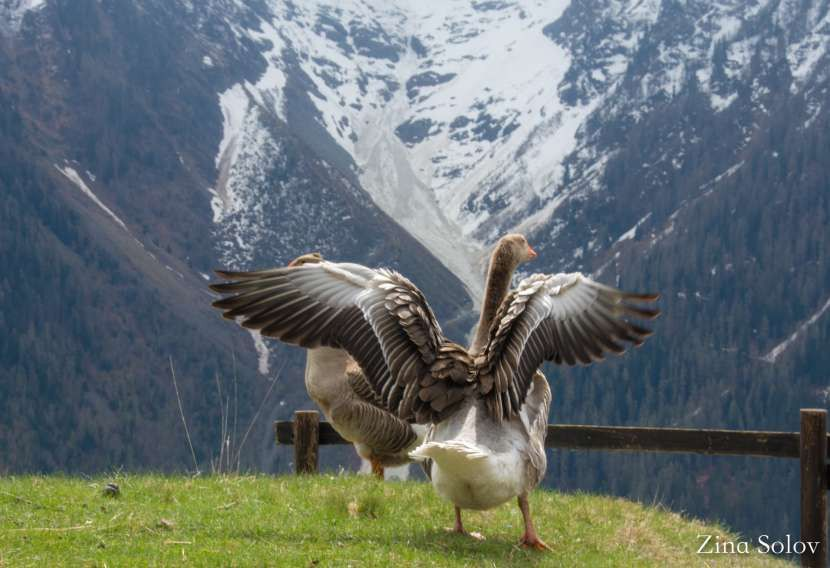
החלטנו לנסוע לעיר עצמה לחפש מסעדה וגם לשוטט מעט, למרות שנהיה ממש קר בחוץ. חנינו במרכז שאמוני (מצאנו חניה) ומשם למשימה הכי קשה- למצוא מסעדה בשעה אחת וחצי בצהריים, משימה לא פשוטה בכלל כי כל המסעדות פשוט מפוצצות אנשים ואין מקום ל-3 עגלות עם תינוקות ו-4 מבוגרים. בדיעבד עדיף היה והיינו נוסעים לדירה ומבשלים שם ארוחה (אולם לא נערכנו לזה ולא קנינו מספיק אוכל), מה שקרה בהמשך זה סרט אימה! עד שמצאנו מסעדה שנראית נחמדה מאוד, ואפילו ידידותית לקטנים, הילדים כבר איבדו את זה מרעב ועייפות, לא שהשירות הסופר איטי של הצרפתים עזר. שלושה תינוקות צורחים בקולי קולות זה לא כיף בלשון המעטה, 4 מבוגרים רעבים ומיואשים מהצרחות זה עוד פחות כיף! למרות המנות הטעימות (עד כמה שהצלחנו לטעום) ארוחת הצהריים הזו תיזכר לשמצה להרבה מאוד זמן.
משם נסענו לסופר- זמן שנ"צ לצוציקים שנרדמו מיד, בכוונה נסענו לעיירה הסמוכה (Les Houches) כדי שישנו קצת באוטו. לאחר הקניות חזרנו לדירה, לא.ערב ומקלחות של הקטנים. ובנוהל משבע בערב זה זמן ההורים, ואנחנו ישבנו לנו בכיף סביב האח וצפינו בפתיתי השלג שהחלו לרדת...מתפללים שנקום לבוקר לבן.
יום 4- 5 למאי 19:
תקוותינו התגשמו ואכן אנחנו מתעוררים לבוקר לבן, המון בלאן מכוסה עננים אך כל הדשא סביב הבקתה שלנו מכוסה בשלג לבן. איזה כיף!!! ואז מסתכלים על הטמפרטורה: 1-! קצת פחות כיף…
בתמונה- צוציקים רואים שלג
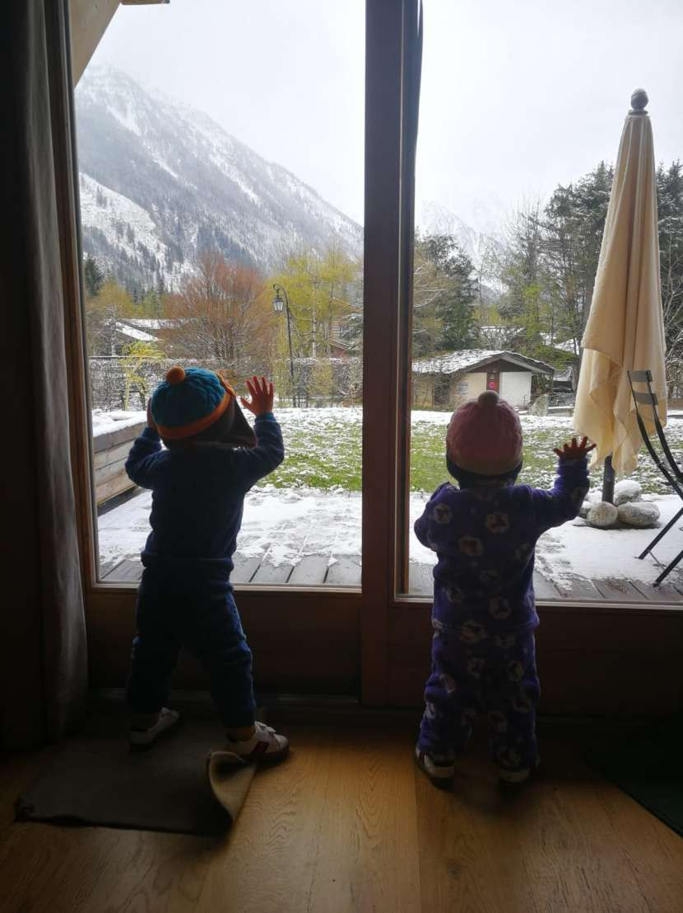
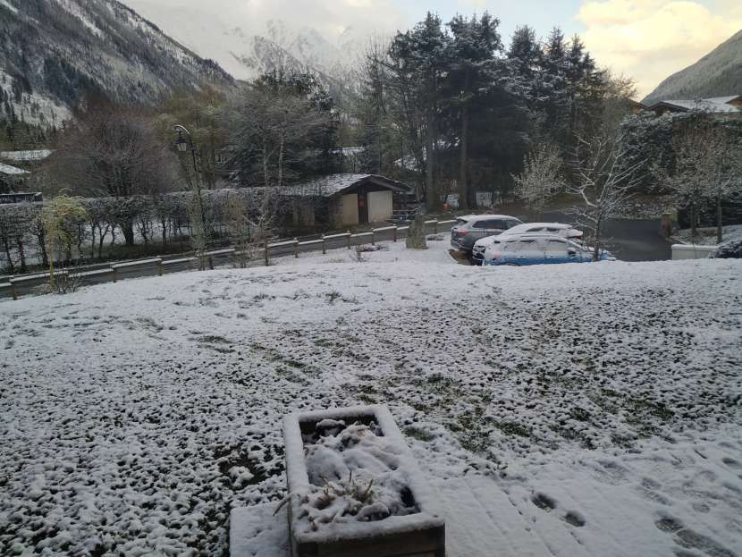
מה לעזאזל אפשר לעשות עם צוציקים בקור כזה??? אפשר לקרר דיסה! אבל פחות עוזר לנו לתכנון פעילות יומית...
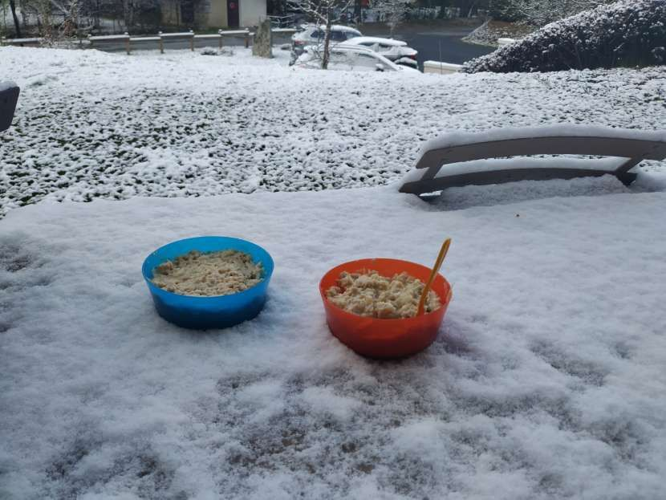
החלטנו שנדחה את ההחלטה עד אחרי א.בוקר וצילומי ילדים בשלג… הם דווקא לא כלכך הבינו מה זה הדבר הלבן והקר הזה שגורם להם להחליק…
כמה תמונות של צוציקים המגלים את השלג:
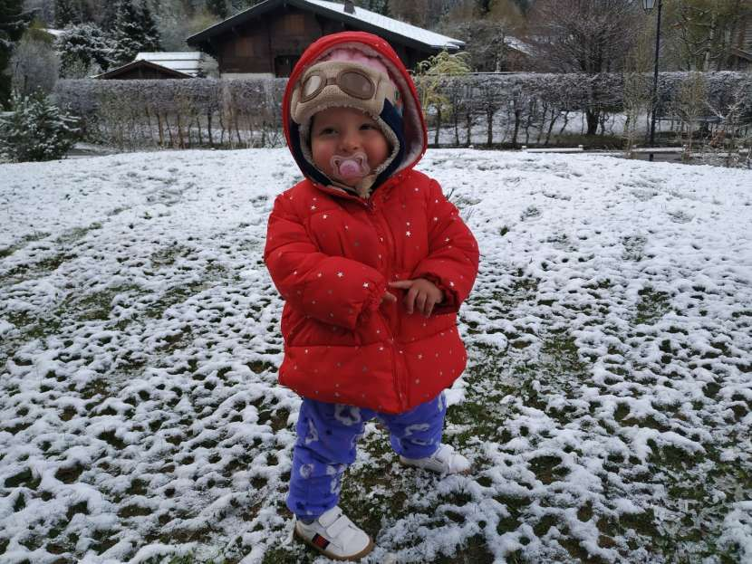
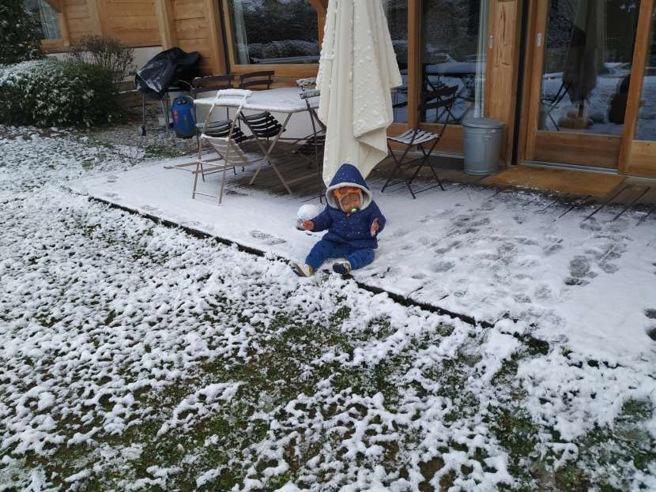
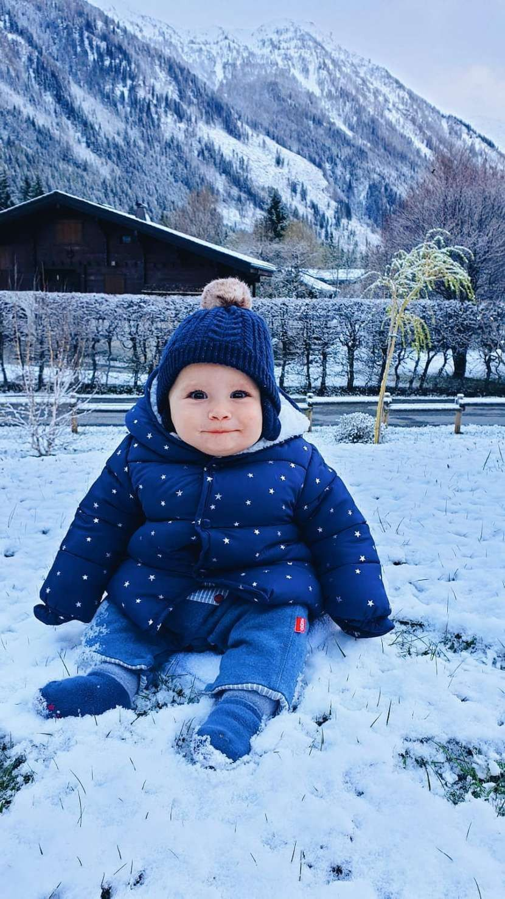
בסוף החלטנו להיצמד לתוכנית המקורית ולנסוע לאגם מונרטיוד שליד מורזין (שעה ורבע נסיעה), אמרנו שגם ככה קר אז לפחות נהנה מהנוף והנסיעה לא כזאת ארוכה לילדים.
יצאנו לדרך, דרך העיירות הקטנות והציוריות של האיזור, אין אוטוסטרדה אלא כביש כפרי שמתפתל בין העיירות השונות. היום יום ראשון והכל די שומם וריק, מהר מאוד התחלנו לטפס להרים (האלפים הגבוהים לכיוון ג'נבה), הנוף השתנה דרמטית מירוק ללבן, הרים צבועים לבן, עצים צבועים לבן וכפרים לבנים לבנים וכל זה בחודש מאי!
עדיין קור אימים בחוץ אז החלטנו לעשות גיחה לאגם ומשם אולי לצהריים במורזין. הגענו לאגם והוא משגע! מוקף הרים לבנים ובנוף המושלג נראה פשוט לקוח מגלויה! הנה כמה תמונות להמחשה:
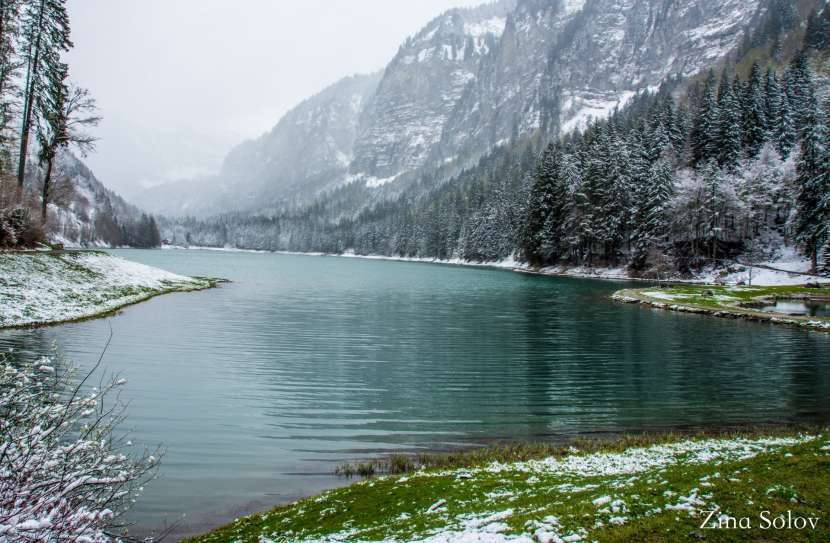
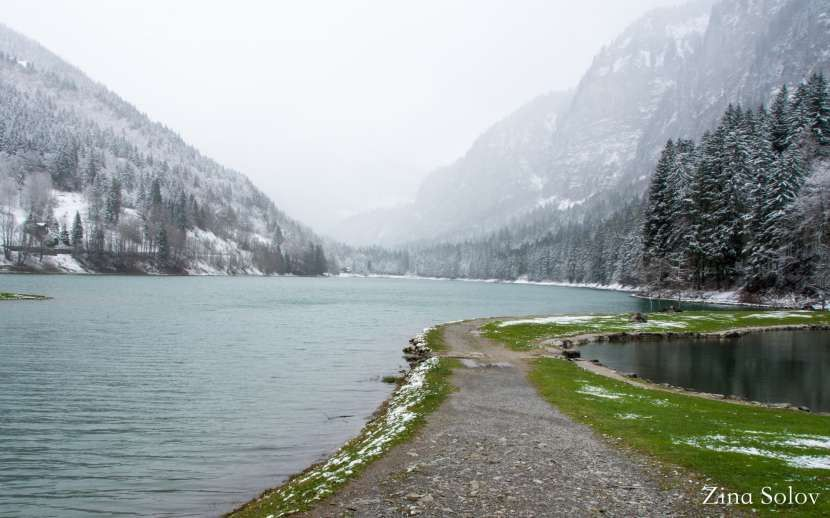
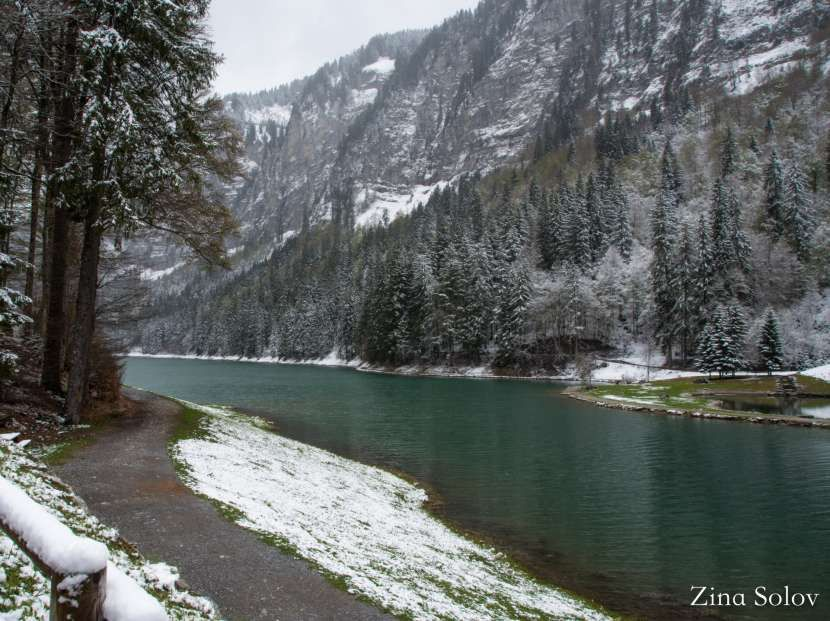
במקום יש 3 בתי קפה- אחד היה מלא לגמרי (או שלא רצו להכניס אותנו עם 3 תינוקות), בשני היתה חתונה אז התיישבנו בשלישי, לא לפני שהצוציקים זכו להתרוצץ ולהצטלם קצת בשלג עם ההורים המשוגעים שלהם, איזה מזל שקניתי להם כפפות אתמול בשאמוני.
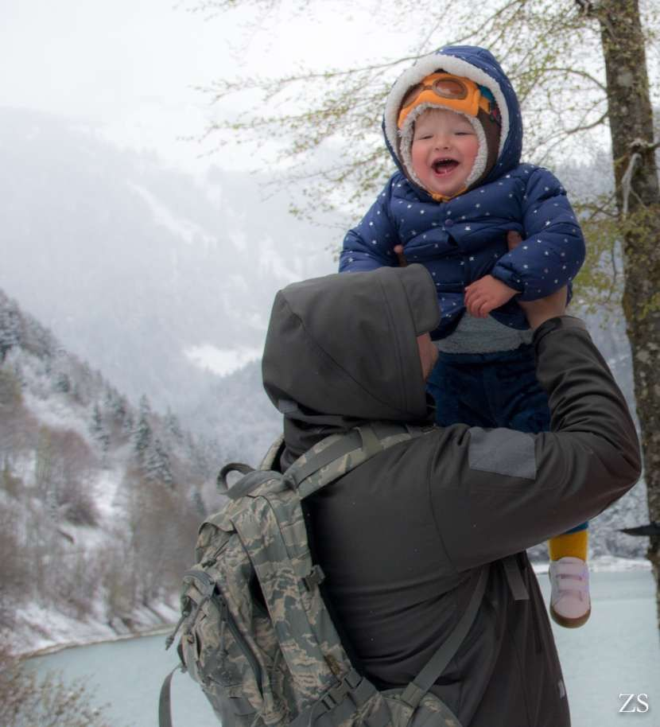
מה שמאוד מפתיע לטובה באיזור, זה עד כמה הכל יחסית מותאם ילדים/תינוקות, בכל בית קפה עד כה (פרט לאחד באנסי) יש עמדת החתלה מדוגמת בשירותים, כסאות בטיחות, מנות ילדים ומרקים בשפע.
החלטנו כבר לאכול את ארוחת הצהריים כאן ולא במורזין - גם ככה קר מידי לשיטוט ברחובות. בתום הארוחה הגברים שלנו עשו לנו קטע- אנחנו תכננו לעשות עצירה במפלים אבל משום מה בעלי אומר לי שצריך לחזור כי הזוג השני תכננו לעצור בסופר, אז העמסנו הכל ונסענו חזרה לחיפוש סופר, רק כשעצרנו בסופר הענקי (רשת lidl) שהיה סגור כי יום ראשון היום, בת דודה שלי לא הבינה למה נסענו משם ולא נשארנו לטייל עוד קצת...כבר בטח שלא נחזור למפל כי ירדנו את כל ההרים, אז המשכנו לחפש סופר פתוח.
את רוב הקניות אגב באיזור עשינו ברשת super u שיש המון סניפים שלה בכל איזור שאמוני.
כשהגענו לדירה מזג האוויר היה בהיר ממש, שמש, המון בלאן נשקף לבן ומהמם, אולם עדיין קר אבל זה לא הפריע לנו מלפרוש מחצלת ולהנות מהשמש וכוס בירה בזמן שהצוציקים פורקים אנרגיות ומשחקים בדשא.
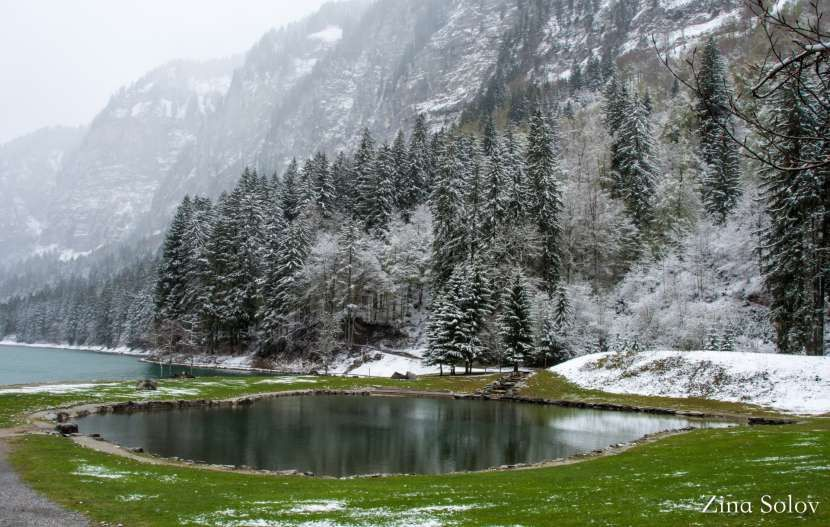
עוד יום עבר בהצלחה!
יום 5- 6 למאי 19:
מזג האוויר סוף סוף השתפר, אמנם עדיין קפוא בחוץ (4 מעלות) אבל השמש מאירה והשמיים נקיים ובחוץ מרגיש חמים יותר ממה שמראה התחזית.
החלטנו שאנחנו לא מבזבזים את היום היפה הזה, אנחנו בצרפת אז נאכל ארוחת בוקר באחת מה-patisserie שבעיר.
היופי עם תינוקות זה שקמים מוקדם- ממש מוקדם ככה שבשעה 8 כבר היינו במרכז שאמוני עם שפע חניה וחיכינו שמשהו יפתח. מצאנו מסעדה מקסימה במדרחוב הראשי שם פשוט טחנו פנקייקים להנאתינו.
שבעים ומרוצים שוטטנו קצת במדרחוב, הצטלמנו (שוב) עם המון בלאן שברקע ושאר ההרים המושלגים (בינהם ה-ADM המפורסם שאליו עולים לתצפית- שלא רלוונטית לנו כי עם תינוקות לא ניתן לעלות לגובה כזה).
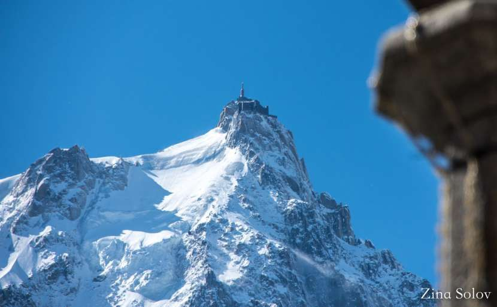
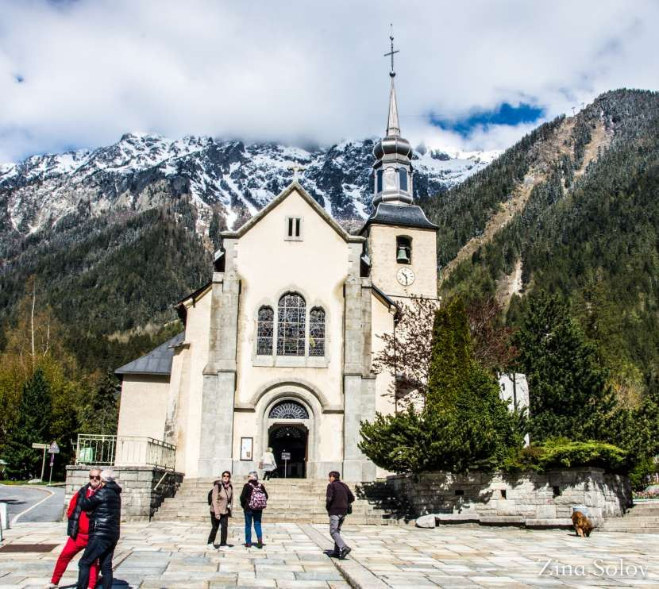
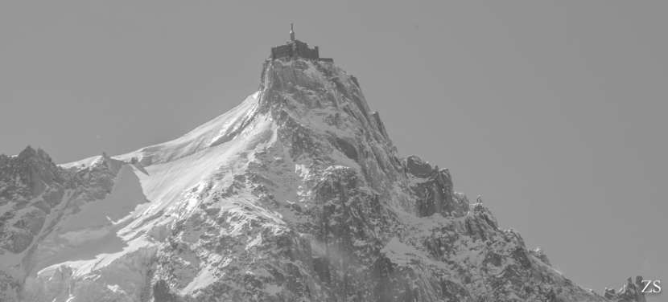
החלטנו לקפוץ ל- tourist information כי להיום אין לנו כלכך תוכניות, כל מה שתכננו לא עובד או סגור- רצינו לנסוע למערת הקרח- דווקא מה-6 למאי זה נסגר לשבוע לתחזוקה. רצינו ללכת לקפה ב-Paradis des praz שם יש בית קפה ופינת משחקים נחמדה לתינוקות על שפת האגם- זה סגור בתחילת השבוע (מפתח ביום רביעי עד שבת). אפילו שקלנו את המסלול gorges de la diosaz אבל גם הוא סגור! זה החיסרון של טיול מחוץ לעונה…
דווקא ב-tourist info המליצו לנו על מסלול ממש נחמד, טיול של כחצי שעה הליכה בעיר עד לאגמוני ה- Lacs des Gaillands, מדובר בשני אגמונים קטנים מהם נשקף נוף מדהים של האלפים. וכך עשינו, צעדנו בנחת חצי שעה במהלכם הצוציקים חרפו להם בעגלות, מזג האוויר היה מדהים- קריר אבל ממש נעים להליכה. צעדנו לאורך שאמוני כשהמון בלאן משמאלנו גבוהה ומרשים.
הגענו למקום והוא אכן מדהים! שמיים כחולים, המון בלאן ורכס האלפים ברקע, עצים ירוקים ודשא ברווזים שטים באגם- הנה כמה תמונות להמחשה.
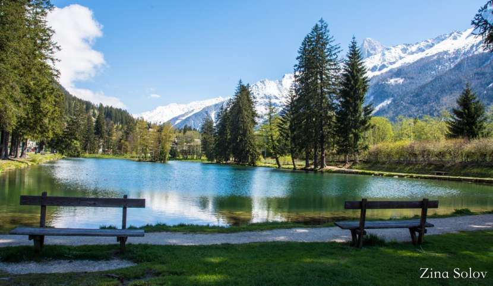
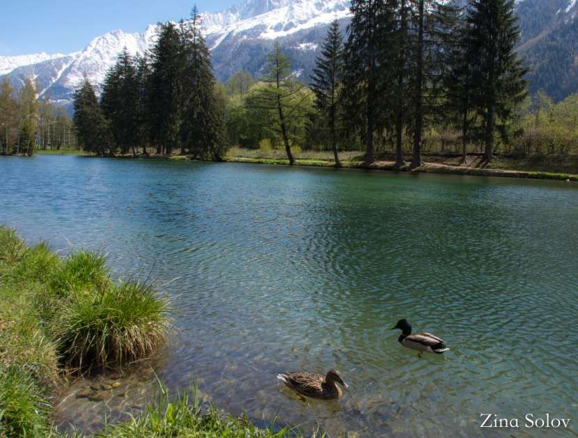
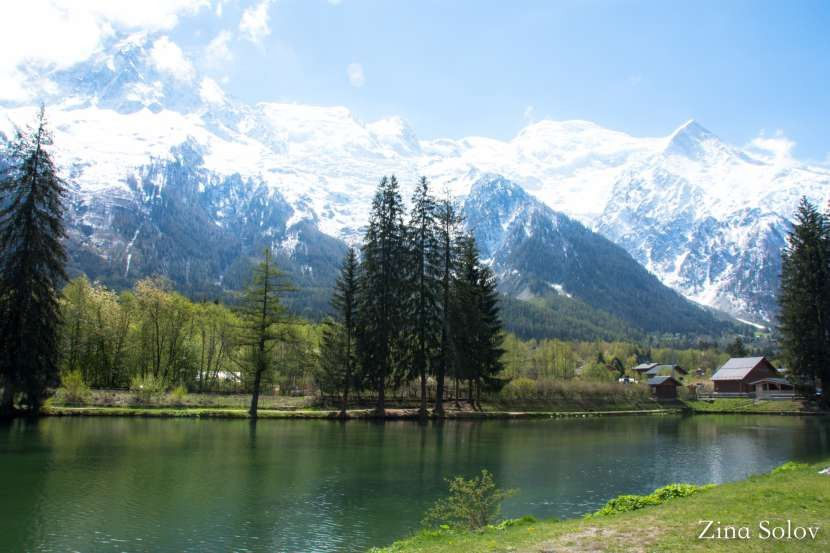
הצוציקים מיד מתעוררים ופשוט מתרוצצים בדשא מתלהבים מהברווזים (מזל שמפחדים להיכנס למים אחרת אבוי לנו…).
בתמונה- שני צוציקים מאושרים
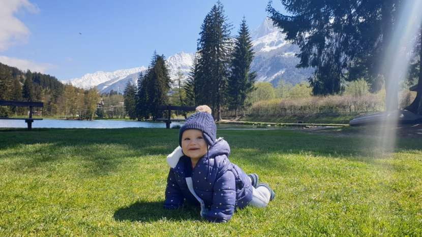
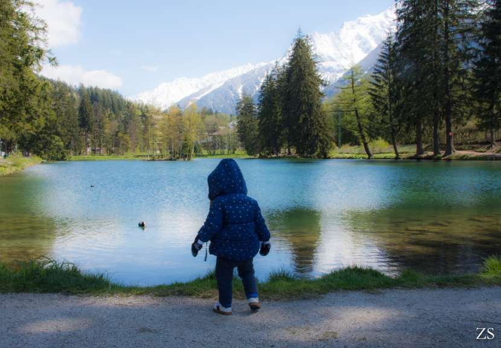
משם חזרנו ברגל לשאמוני- עוד הליכה נעימה של חצי שעה, רעבים הגענו למדרחוב הראשי שכבר הומה אדם (במזג אוויר כזה יפה כולם יצאו החוצה). ככה יצא שגם צהריים אכלנו באותה המסעדה שאכלנו בבוקר- מסעדות טובות לא מחליפים…
אי אפשר בלי קצת מידע על שאמוני, אז ככה- שאמוני-מון-בלאן (צרפתית: Chamonix-Mont-Blanc) היא עיירת קיט במחוז סבואה עילית (Haute-Savoie) שבחבל אוברן-רון-אלפ, מזרח צרפת. העיירה שוכנת בליבו של עמק שאמוני. בשטח של 245.5 קמ"ר, היא מכסה 16 כפרים (לרבות זה הנושא את שמה) שבהם יחד חיים מעט יותר מ-9,000 תושבים. שאמוני יושבת בסמוך למשולש הגבולות שווייץ-איטליה-צרפת בגובה שנע בין 995 מטר מעל פני הים ל-4,810 מטר, על מורדותיה הצפוניים של האֶגוּי-די-מידי (Aiguille du Midi), פסגה במסיב המון בלאן.
שאמוני מוזכרת בשנת 1091, אז העמק שבו היא שוכנת הוענק על ידי הרוזן אֵמוֹן הראשון מז'נבהלמנזר של בנדיקטינים בפיימונטה. נזירים שהתיישבו בגדה הימנית של הנהר ארב (Arve) היוו את ראשיתו של מנזר שאמוני. שטח העיירה היה חלק מרוזנות סבויה, שהפכה אחר-כך לדוכסות סבויה שנכללה אחר-כך בממלכת סרדיניה. בחסות המהפכה הצרפתית והקיסרות הנפולאונית הייתה שאמוני לטריטוריה צרפתית. ב-24 במרץ 1860, תחת חוזה טורינו, נמסרה סבויה לידי צרפת, וב-4 באפריל הייתה העיירה שאמוני לצרפתית לכל דבר, כשבנובמבר 1921 היא קיבלה את שמה הרשמי - "שאמוני-מון-בלאן". שלוש שנים לאחר מכן, ב-1924, אירחה העיר את משחקי החורף האולימפיים הראשונים. תקופת מלחמת העולם השנייה פעל בעיירה בית ילדים של ארגון אוז"ה בו הוסתרו עשרות ילדים יהודים, בעזרת מספר מטפלות נוצריות ויהודיות, וכך ניצלו מגירוש למחנות השמדה על ידי הנאצים והצרפתים משתפי הפעולה עמם. חלק מהמטפלות, בהן קלר ברוויצקי, קיבלו לימים את אות חסיד אומות העולם מיד ושם על פועלן להצלת הילדים.
אחרי עוד שיטוט בעיר וקנית מזכרות, החלטנו שלא להסתכן בשנ"צ בדירה (מחשש סביר שהילדים פשוט לא ישנו- לאכזבת הגברים שחלום השנ"צ שלהם נגוז) העדפנו (אני ובת הדודה שתכלס מכתיבות את הטיול) להיצמד לדרך ההרדמה שהוכחה כיעילה ביותר בטיול הזה- נסיעה!
וככה נסענו לתצפית Plaine Joux שנמצאת כארבעים דקות נסיעה משאמוני, בכביש מפותל ממנו נשקף כל עמק שאמוני. השלג של אתמול נראה בבירור על הפסגות עד כדי כך שממש יש פס על ההרים בגובה מסוים- למטה ירוק ובאופן חד הופך לבן.
ב- Plaine Joux עושים סקי, כל הדרך מלאה בבתי הארחה ובתי ספר, בקיץ המקום משמש למצנחי רחיפה. לנו התענוג הזה יחכה כמה שנים עד שהילדים יגדלו. ובינתיים, ניצלנו את הזמן שהילדים חורפים ברכב, ויצאנו לנשום אוויר ולהנות מהנוף (כשאחד כמובן שומר על הצוציקים ברכב). נהננו במיוחד לצפות בבחור מתוסכל שפשוט פעם אחר פעם לא הצליח להמריא עם המצנח שלו, וכשסוף סוף הצליח הצטרפנו למחיאות הכפיים שהוא קיבל מהצופים מטה.
הנה כמה תמונות של המקום:
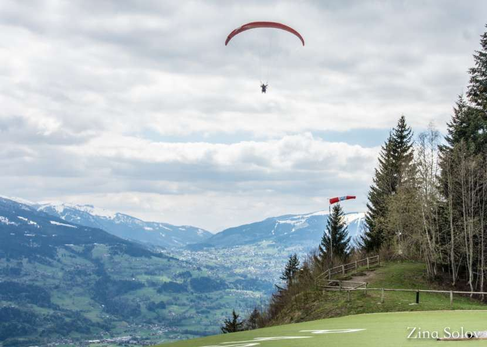
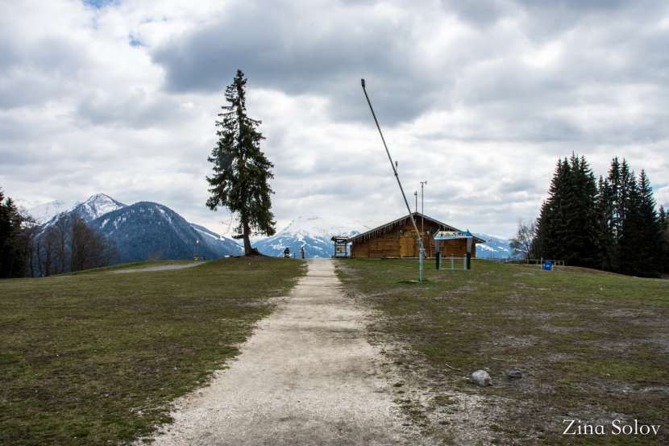
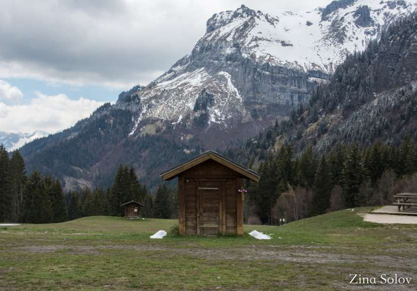
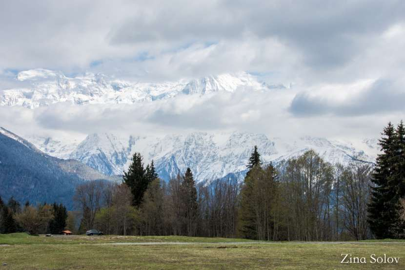
משם אפשר להמשיך לאגם וורט (VERT) הנמצא כ-5 ק"מ במעלה ההר, אולם החלטנו לחזור לדירתנו היפה ולהנות מעוד ערב בחוץ על המחצלת וכוס בירה. בדרך לPlaine Joux, עוברים ליד אגמון קטן ומקסים שנראה כמעיין פיות, עצרנו לצלם אותו בדרך חזרה ובמקום יושב לו בחור ומנגן על סקסופון…קסום!
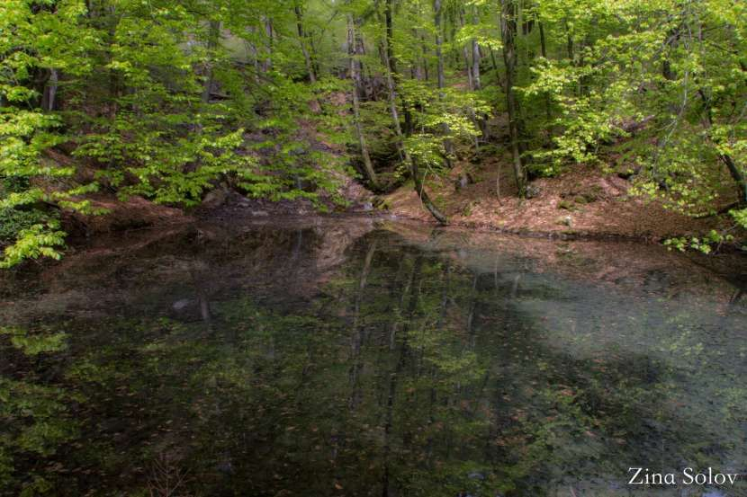
וזה הנוף שחיכה לנו בערב בדירה:
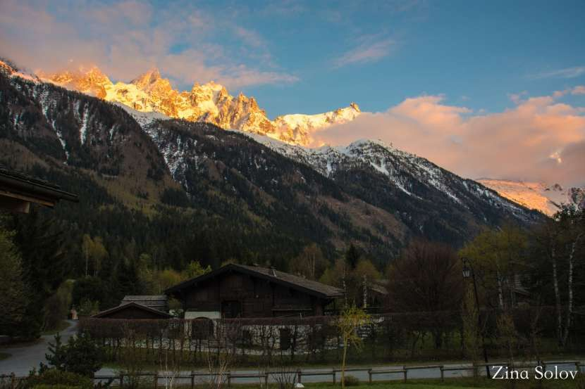
יום 6- 7 למאי 19:
היום אנו עוזבים את דירתנו היפה והנעימה ונוסעים לדירה הבאה שלנו בה נשהה עד סיום הטיול באיזור אגם בורג'ט. גם הפעם החלטנו שלא נעשה את הנסיעה בבת אחת אלא נעצור במקומות יפים ועם השמש הקיצית המקדמת את פנינו בוקר והתחזית החיובית, זה יהיה ממש בזבוז לבלות יום כזה יפה ברכב.
התארגנו לאט לאט, ואחרי ארוחת בוקר לתפארת אנו עוזבים את שאומני ואת המון בלאן ונוסעים לאגם פאסי. נסיעה קצרצרה של 20 דקות מביאה אותנו לאגם מקסים ביותר, מים תכולים, בהם משתקפים האלפים שסביבנו, הדשא ירוק ופורח. בקיץ המקום משמש כאתר רחצה עיקרי, עכשיו בעיקר משמש לטיולי כלבים ורביצה בדשא.
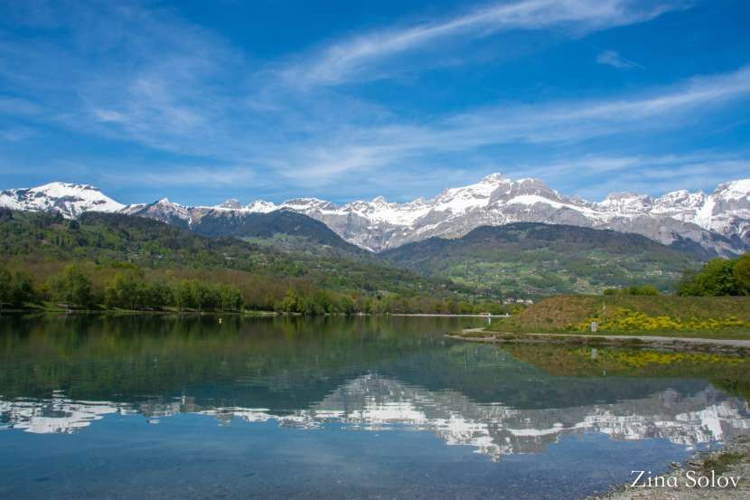
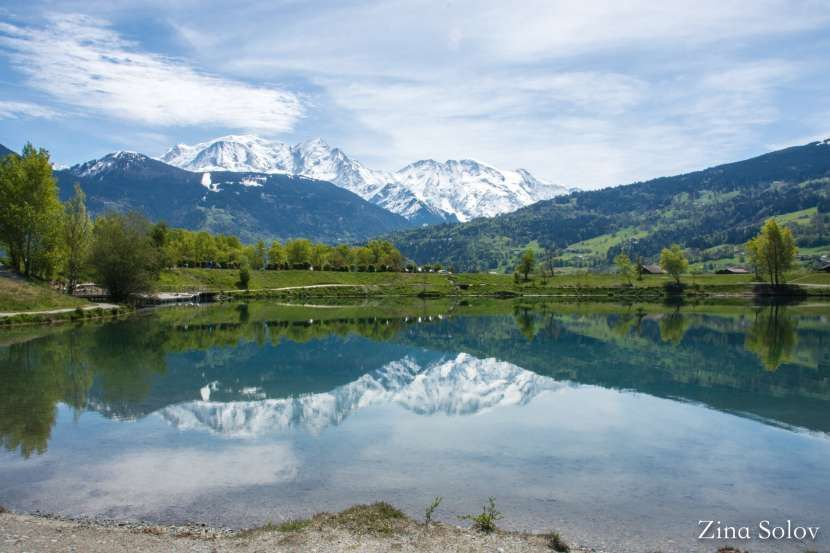
מצאנו לנו פינה חמודה, פרשנו מחצלת ושיחררנו את הצוציקים לחופשי.. כיאה להורים לתאומים בני שנה ארבע שרק מתרוצצים, לא באמת ישבנו על המחצלת, בעלי מאוד קינא בבעלה של בת דודתי שניצל את ההזדמנות לשנ"צ… ככה זה עם ילד אחד שרק זוחל, חיים תותים :) בגלל העונה וכי זה אמצע השבוע, אין הרבה אנשים כך שאנו זוכים לאווירה שקטה ונעימה.
הנה תמונות של צוציקים נהנים משמש אביבית:
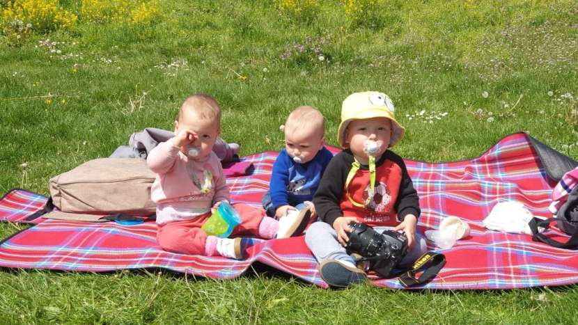
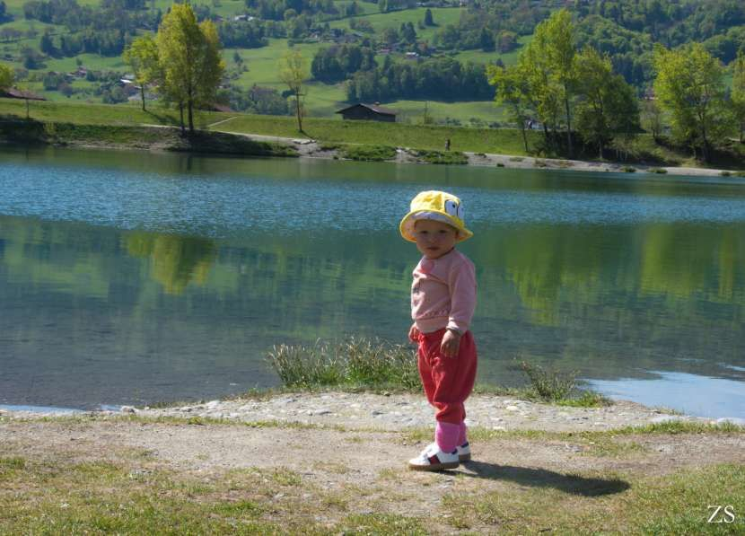
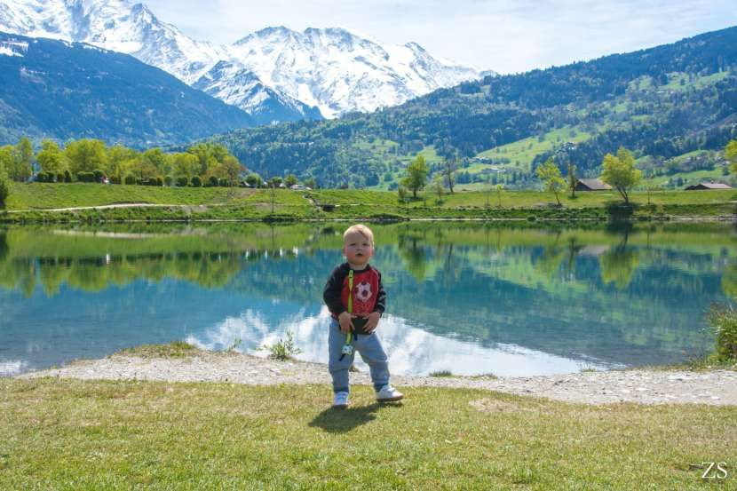
אחרי שעשינו המון סיבובים ליד האגם וסביב חלקו, ואני כמובן זכיתי לצלם תמונות מדהימות מכל זוית אפשרית (הנה היתרון בלרוץ אחרי שני טרוריסטים קטנים), הגיע זמן ארוחת הצהריים, ושוב הבעיה עם הצרפתים האלה שאוכלים רק בשעות מסוימות (12-14). אם ניסע עכשיו ליעד נפספס את חלון ארוחת הצהריים, אז החלטנו לחפש משהו ליד.
במתחם עצמו יש מעיין מסעדה, אבל זה יותר מזון מהיר למי שרובץ בפארק, אנחנו מחפשים משהו יותר מסעדתי, למזלנו הוייז לא אכזב והמסעדה הראשונה שבחרנו (שנמצאת 10 דקות נסיעה) הוגדרה כהצלחה מסחררת, הרבה בזכות האוכל הטעים מאוד וגם בזכות כרי הדשא שיכולנו לשחרר את הילדודס לשחק, שם המסעדה הוא- La Braconne Côté Mont-Blanc. תזכרו שארוחות צהריים בצרפת נמשכות די הרבה זמן, ככה שכאשר יצאנו משם השעה היתה כבר כמעט 15:00, מעולה, אין כמו זמן לשנ"צ לצוציקים שישנו במהלך הדילוג ליעד הבא. אנו מכוונים את הוויז לעיירה בה אנו לנים- conjux שעל שפת אגם בורג'ט, נסיעה של שעה וחצי לפי הוויז ויצאנו לדרך.
את רוב הנסיעה אנחנו עושים על כביש האגרה ככה שהיא עוברת מהר, אולם בשלב מסויים אנו יורדים לכביש עירוני, צר ומפותל (D991B) שעובר בין הכפרים הקטנים שהגיל הממוצע של התושבים המתגוררים בהם הוא 80-90… מצד אחד פסטורלי ויפה, המון גפנים, ירוק, פרות רועות באחו, מצד שני אנחנו די עייפים ורוצים כבר להגיע.
בתמונה- הדרך הפסטורלית:
השיא של הנסיעה הוא העליה להר שם נמצאת התצפית על אגם בורג'ט- col de chambotte (לא היה לנו מושג שזה שם רק כשראינו את השלט), הנסיעה מפותלת ממש, והירידה מפחידה לא פחות… אבל הנוף על האגם מלמעלה שווה כל פעימה שהחסרנו. היינו בטוחים שזו טעות של הוויז אבל מסתבר שזו אכן הדרך לעיירה.
העיירה נמצאת בצד הפחות מפותח של אגם בורג'ט, לעומת איקס לה באן הנמצאת בצד השני, שהיא מרכז תיירותי בפני עצמו (ומחירי הדירות בהתאם).
הגענו לעיירה בשעה 17:00 והחלטנו לחפש סופר, בעירה שלנו אין, מצאנו אחד בעיירה השכנה שבו אין כלום! יותר דומה לקיוסק. המוכרת אמרה שיש סופר גדול במרחק רבע שעה נסיעה. הצרחות בשני הרכבים לא משאירות לנו הרבה ברירה, צריך להגיע לדירה ולתת להם אוכל (מזל שהכנו שניצלים ופסטה בציידנית שאיתנו, בדיוק למקרים כאלה), אז את מקום סאגת הסופר פינתה סאגת מציאת הדירה.
הזמנו דרך air bnb דירה על שפת האגם (בתמונות ובתיאור)- House feet in the water on Lake Bourget, הבעיה הקטנה היא שלדירה אין כתובת שניתן לרשום בגוגל, אז חזרנו 10 שנים אחורה לשיטות הניווט העתיקה- שתי רגליים ושפת סימנים (המקומיים שם בני ה-80 פלוס, לא באמת יודעים מילה באנגלית). למרות שהבעלים שלח לנו מגילה שלמה בטלפון איך למצוא את הדירה ולפתוח את הדלת, המשימה לקחה לנו 30 דקות של ריצה לאורך כל קו המים של העיירה, בשיפועים של 30 מעלות, שפת סימנים בצרפתית והרבה שערות לבנות, כשכל הזמן הזה אני בשיחת ווטסאפ עם בעל הדירה, לבסוף הצלחנו לאתר את הבית.
כאן ציפתה לנו אכזבה מרה… הבית אמנם צופה על האגם- כל חדר בבית, והוא באמת נעים וביתי, אולם לאחר הפאר שהיה לנו בשאמוני והאכזבה שאין באמת חוף (כדי להגיע למים צריך ללכת בשיפוע דרך דשא בגובה הברכיים- לא באמת מתאים לצוציקים בני שנה וקצת) הרגשנו ממש נפילה.
אגם בורג'ט הנשקף מכל חלון בדירה:
טוב, אין זמן להתאכזב, הבנים פורקים אותנו בבית ונוסעים לחפש סופר בזמן שאנחנו מאכילות 3 צוציקים (כשרק אחד נהנה לאכול והנותרים צורחים).
כנראה שלעולם לא נדע לאן בדיוק הבנים שלנו נסעו (כי לקח להם נצח לחזור), מסתבר שהם טיפסו חזרה את ההר (חצי שעה לכיוון) ומצאו איזה מינימרקט מסכן שבקושי היה בו אוכל, כל זה כשבמרחק 10 דקות מאיתנו היה סופר ענקי (גילינו זאת למחרת) - ועוד אומרים שלנשים אין חוש כיוון.
הבית הזה יותר קטן, עם מטבח פיצי (בהשוואה למטבח הענקי שהיה לנו בשאמוני), עוד חסרון זה השירותים נמצאים למטה והמקלחת למעלה (לזכות הבעלים יאמר שהם כתבו את כל זה בתיאור הבית), היתרון- חדר שינה לילדים, מלא בצעצועים וכל טוב...בסך הכל הבית בסדר גמור, פשוט נקודת המבט שלנו שונה- אם היינו מתחילים שם היינו מתלהבים ממש מהבית שמכל חלון נשקף האגם המקסים- נוף משגע, אבל התחלנו מבית מפואר בשאמוני וכשיורדים באיכות תמיד יש מעט אכזבה, מה שלא הפריע לנו לאכול ארוחת ערב מעולה כמיטב המסורת בטיול הזה (בשר על האש כן :)).
עם נוף כזה מהחלון קשה להשאר מבואס:
יום 7- 8 למאי 19:
שוב אלוהי מזג האוויר בגד בנו, קמנו ליום גשום וסגרירי, מה כבר אפשר לעשות עם 3 תינוקות בגשם? לא מספיק שהחורף הישראלי היה גשום ממש וסבלנו מכל סופ"ש גשום, עכשיו גם פה??? טוב, אין ברירה, אי אפשר לשבת בבית, נשתגע כולנו, אז החלטנו לנסוע לעיירה טולאריס שעל אגם אנסי, שמעתי שזו עיירה יפיפה וקיוונו שאחרי נסיעה של שעה אולי תהיה הפוגה ונוכל לצאת להתאוורר.
חוזרים כל הדרך לכיוון אנסי, שוב מטפסים את ההר המטורף ונוסעים דרך השדות החקלאיים והכפרים הקטנים, הצוציקים נרדמים חזק חזק.
הגענו לטאלוריס, עיירה מדהימה שבנויה על צוק ויורדת ישירות לאגם, ביום יפה כיף לשוטט בסמטאות העיר, לתצפת על נוף האגם שנשקף ממנה. אותנו מקדמים ענני גשם, אבל גם זה מחזה די מרשים- ענניים שתלויים מעל האלפים הנסתרים, מחזה דרמטי מאוד, הנה תמונה:
החלטנו לטייל בנמל העיירה, בחוץ עדיין טפטופים אבל נראה שבקרוב תהיה הפוגה, אז בינתיים מצאנו קפה קטן, הזמנו קפה וקרפ לי ולבעלי וחשבנו שנפנק את הצוציקים בביסים קטנים, ממש...תוך דקות הזמנו עוד 4 קרפים כי הקטנים פשוט לא הפסיקו לזלול ולבקש עוד...שמנמנים קטנים. בינתיים הפסיק הגשם, איזה כיף!
מיד אורזים את הצוציקים בעגלות ויוצאים לנשום אוויר. הלכנו לאורך הנמל הפצפון של העיירה שממנו נשקף האגם ובתי עשירים וכמובן האלפים מכוסי העננים המקיפים את אגם אנסי. ממש ליד הנמל יש פארק נחמד עם דשא, שם ישבו להם בכיף שני ברבורים, עד שהטרוריסט הקטן הגיע ולא הפסיק לרדוף אחריהם.
בילינו במקום כשעה, איזה מזל שיש בגדי החלפה לילדים באוטו, שניהם היו רטובים לגמרי מכל ההתרוצצות בדשא הרטוב, רטובים אבל מאושרים!
השעה כבר אחת וחצי, זמן צהריים, לפי הוויז המסעדה הכי קרובה זה חצי שעה נסיעה- כנראה לא נספיק, אז החלטנו שבמקום לאכול במסעדה צרפתית נסע לסניף דקטלון (עשרים דקות נסיעה, ממש בכניסה לאנסי) ושם יש גם KFC (ממש ירידה ברמה, אוף עם הצרפתים ושעות הארוחות שלהם..), לפחות ב-KFC היה ג'ימבורי שהילדים יכלו לפרוק אנרגיות עד שחיכינו לאוכל (וחיכינו המוווןןן זמן…).
כשסיימנו לאכול היה כבר שתיים וחצי, הילדים צריכים שנ"צ, ולצערנו במזג אוויר כזה באמת אין מה לעשות איתם, אז התארגנו ונסענו חזרה, לפחות הם ישנו באוטו. ממש לפני ההר שלנו, עצרנו סוף סוף לתצפית ה-col de chambotte שלא עצרנו בה אתמול, בדיעבד עדיף והיינו עוצרים אתמול כי ביום כזה סגרירי הנוף יפה אבל לא מרשים כמו ביום שמש.
טיפ לבאים- כשאתם פונים לכיוון התצפית, תסעו עם הרכב ממש עד הסוף, בהתחלה הגענו למגרש חניה וראינו מדרגות אז חשבנו שזה הסוף של הדרך, אבל הכביש מוביל ממש עד התצפית, במקום יש מסעדה, ממנה הנוף פשוט משגע, אבל ביום כזה ומחוץ לעונה המסעדה די שוממת.
וככה חזרנו לדירה, עוד יום הסתיים בהצלחה יחסית.
עוד תמונה של האגם מה”חוף” ליד הדירה שלנו:
יום 8- 9 למאי 19:
גם היום אין לנו מזל, יום מעונן סגרירי וגשום מחכה לנו. החלטנו שנעשה היום יום באיזי בקרבת הדירה, כדי לתת לגברים שלנו לנוח קצת מכל הנהיגה.
אחרי ארוחת הבוקר (המאוחרת מאוד) ירדנו לכיוון הנמל (יותר נכון המעגן) של העיירה, בחוץ אפרורי ומטפטף, הצוציקים מיד נרדמו בעגלות. העיירה עצמה מאוד קטנה, ודי משעממת, יש קמפינג בכניסה כך שאני מניחה שבעונה המקום די שוקק חיים.
הנמל די מסודר, יש חניה גדולה, פארק נחמד עם דשא שנושק לשפת האגם, סירות שאפשר להשכיר (רק שכרגע אין ממי) ומסעדת דגים La Jetée שטוענת שכל יום עד 12 מוגשים במקום דגים טריים מהאגם, האמת נשמע רעיון טוב לאכול צהריים במסעדת דגים, משום מה בסוף לא עשינו את זה ודי חבל…אחרי סיבוב של חצי שעה התחיל לרדת גשם אז חזרנו לדירה.
בתמונה- המעגן:
הצוציקים ישנו שנת בוהריים ככה שהם לא ממש עייפים, העברנו כשעתיים בדירה אבל השעמום הניס אותנו החוצה. החלטנו לנסוע ולטעום מהיינות המקומיים, חיפוש מהיר בגוגל גילה שיש שפע! יקבים בסביבתנו, וככה על סמך ריבוי ביקורות וקרבה גיאוגרפית (10 דקות נסיעה) הלכנו על היקב ב-Caveau de Chautagne.
כרגיל הצוציקים צריכים שנ"צ, ואנחנו די רעבים, אז החלטנו לקפוץ לאיקס לה באן, אולי נמצא טיילת נחמדה... נסיעה של כחצי שעה מביאה אותנו לעיירה המפורסמת ביותר באגם בורג'ט, הצוציקים ישנו בנחת, ואנחנו רעבים בטירוף, החלטנו לקנות לנו פיצה ולחפש מקום נחמד לאכול אותה, על הדרך גם קפצנו לסופר להשלים מצרכים לארוחת הערב.
לצערי הרב, לא ניצלנו את הזמן בעיירה, במקום לחפש טיילת נחמדה שוב התחיל גשם, ככה שבסוף את הפיצה שקנינו, אכלנו בשולי הדרך מהיציאה לכיוון היקב (קצת בזבוז, אבל היום הזה די תוכנן גרוע...אין מה לעשות, מלימונים צריך להכין לימונדה).
ממשיכים בדרכנו ליקב, בחוץ גשם, מסביבנו המון כרמים פוטוגניים בטירוף, הגענו למבנה אבן שהוא בעצם החנות של היקב, במקום כאמור יש חנות מכירת יינות תוצרת מקומית עם גבינות ועוד, בקומה מעל יש מוזיאון המסביר את פעילות היקב, לצערנו הרב הכל בצרפתית, אבל זה לא מפריע לצוציקים לפרוק אנרגיה במקום חדש ומוגן מגשם. בתום הסיור (שלקח לנו כרבע שעה) ירדנו למטה לגולת הכותרת- טעימת יינות. במקום יש עמדת יצירה שהקטנים מסתערים עליה מיד ועושים רה-ארגון, אנחנו בינתיים טועמים בתורות- כי שני הטרוריסטים שלי החליטו שבחנות עצמה יותר מעניין, יש בקבוקים לשבור...(לבקבוקים שלום אגב). בסוף גם הם ובן דודם הקטן זכו לטעום יין (תירוש, מה כבר חשבתם?).
בתמונה- צוציקים שיכורים מתירוש
היקב והכרמים סביבו:
כשיצאנו החוצה סוף סוף התבהר, ואפילו השמש מציצה מידי פעם, החלטנו לעצור במעגן בעיירה ולתת לצוציקים לפרוק אנרגיה… הזוג השני נסעו לדירה כי הקטן כבר צרח מרעב, אנחנו בזמן הזה זכינו להפוגה מהגשם ושוטטנו בכיף על גדות האגם, הקטנים שיחקו עם האבנים, ואז שוב גשם…
כשחזרנו לדירה זכינו להפתעה בדמות קשת מרשימה שנגלתה מכל חלון אפשרי בדירה, סימן לאופטימיות, כי מחר לפי התחזית סוף כל סוף צפוי לנו יום יפה! איזה סיום יפה ליום הסגרירי שהיה לנו.
יום 9- 10 למאי 19:
בדיוק כפי שניבאה התחזית, התעוררנו לבוקר מקסים, כבר מהחלון של החדר האגם נראה תכול וקסום כמו באגדות עם פס של ענן לבן מעליו. היום זה היום האחרון שלנו ואנחנו רוצים למצות אותו עד תום.
אחרי ארוחת בוקר זריזה, אנחנו יוצאים לדרך, לכיוון קניון Gorges du la fier שנמצא לא רחוק מהעיירה אנסי, נסיעה של כשעה מהדירה שלנו, בכביש שכבר מוכר לנו היטב. שוב עולים על ההר, נוסעים דרך שדות ועיירות עתיקות ומנומנמות, הצוציקים גם ישנים (ממש התרגלו לשנת בוהריים בטיול הזה), כשכמעט הגענו לחניון בעלי החליט לא להקשיב ובמקום לפנות ימינה לחניה, המשכנו עוד קצת ישר ובעצם הגענו לעיירה Montrottier, ולטירה המהממת עם אותו שם, לטירה עצמה לא נכנסנו (הספיק לנו הטרור ביקב), אז הסתובבנו וחזרנו לחניון לתחילת המסלול.
בתמונה- הטירה כפי שנצפית מהמסלול:
המסלול אינו נגיש לעגלות לכן תינוקות ופעוטות חייבים להיות במנשא (לא ניתן לקחת בידיים או לתת ללכת לבד מחשש לנפילות והחלקות), ניתן להשכיר מנשא במקום אולם יש רק שניים…
אנחנו באנו מצויידים במנשאים, הצוציקים דווקא מאוד אוהבים מנשא, אנחנו קצת פחות (הם כבר כבדים השמנמנים הקטנים). מהחניה יש הליכה של כ-300 מטר עד תחילת המסלול, עלות כניסה 5.8 יורו למבוגר (ילדים עד גיל 7 חינם), אנחנו נכנסים בשער ומיד נדהמים מהמראה, אנחנו עומדים בתוך נקיק צר בגובה של כ-25 מטר מעל נהר שוצף שמתפתל מחתנו על הסלעים. ההליכה היא על גשרוני עץ שמקובעים לקירות, טיפות כל הזמן מטפטפות עלינו מלמעלה- מכל הצמחיה שעדיין לחה מהגשם.
הנה כמה תמונות:
המסלול קצת חלקלק אז הולכים בזהירות, הצוציקים ממששים כל אבן ומתלהבים מכל טיפה שנוחתת על ראשם, על קירות האבן יש סימני מדידה של עד איזה גובה הגיע הנהר, בשנת 1990 הנהר עלה על גדותיו מעל קירות הקניון והציף את כולו, כשאתם למטה ורואים עד כמה הוא עלה זה פשוט בלתי נתפס, מזל שעכשיו המפלס ירד.
המסלול די קצר כך שאחרי כקילומטר אנחנו יוצאים מהנקיק אל תוך ים סלעים- כך קוראים לזה אגב, מעין תופעת טבע של בריכת סלעים וסביבם מתפתל הנהר- זהו הגענו לסוף המסלול, בכדי לצאת פשוט חוזרים את הכל חזרה.
אנחנו מאוד נהננו! ביציאה החלטנו להתפנק על גלידה ולשחרר מעט את הקטנים שהיו כלואים במנשא (לא שהם קיטרו על כך), הם כמובן רצים לחנות המזכרות לעשות סדר בכל המוצגים שידיהם משיגות, בזמן שבן הדוד הקטן זוחל בהנאה על טרסת העץ… עד שקלטו את הגלידות, ואז להורים לא נשאר כלום…
שוב לא שמנו לב לשעה וכבר אחת בצהריים, צריך לחפש מסעדה, לפי הוויז יש אחת ממש למרגלות הטירה, אולם כשהגענו לשם אמרו שהם מלאים (למרות שכל הרחבה בחוץ היתה ריקה…), משם נסענו לעוד מסעדה שלהפתעתנו גם היא היתה סגורה, בחוסר ברירה מצאנו מסעדונת באיזור תעשייה בפרברי אנסי (כבר לא רצינו לחפש משהו יותר אותנטי כי פשוט לא היינו מספיקים להגיע לשם). המסעדה היתה דווקא חמודה בעיצוב טרופי יפיפה והשירות היה מעולה, אולם האוכל היה ממש בינוני, העיקר שהקטנים אכלו קצת. ממש ליד המסעדה יש patisserie אנחנו מצטיידים במלאי עוגות ומאפים ונוסעים חזרה לכיוון אגם בורג'ט- שעת השנ"צ של הקטנים הגיעה…
בגלל שזכינו למזג אוויר מקסים לפינאלה של הטיול שלנו החלטנו להעביר את הערב בפארק חביב על גדות האגם- Loisirs des Mottets, מעין שמורת טבע עם חוף רחצה מסודר, מדשאות, מתקני שעשועים לילדים, ממש פארק אירופאי טיפוסי.
התמקמנו לנו ליד מתקני השעשועים ונתנו לקטנים לפרוק אנרגיה בזמן שנשנשנו להנאתנו את המאפים המדהימים שקנינו, טיילנו קצת על גדות האגם וראינו ברווזים מתפרעים במים, הקטנים ממש התלהבו...וככה העברנו את אחר הצהריים המקסים של יומנו האחרון.
חוזרים לחדר להשכבות ארוחת ערב ואריזת מזוודות…
11 למאי 19- עוזבים
קמנו מוקדם, מאכילים את הקטנים ויוצאים לדרך לשדה התעופה בליון- שעה ורבע נסיעה.
בדרך עברנו ליד העיירה הסמוכה אלינו Chanaz שנגלת לנו בשיא יופיה ותפארתה, איזה פספוס מצידנו שלא מצאנו זמן לשוטט ברחובותיה…
זהו, הגענו לשדה, מחזירים את הרכבים ובשעה 14:00 עולים לטיסה ארצה.
עוד טיול מוצלח הגיע לסיומו.